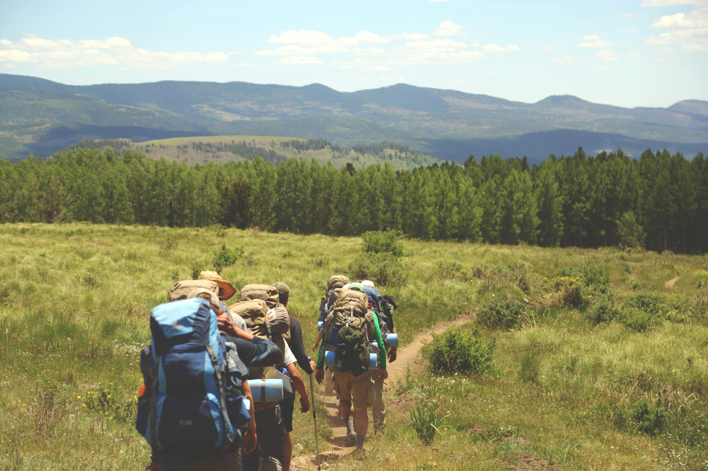
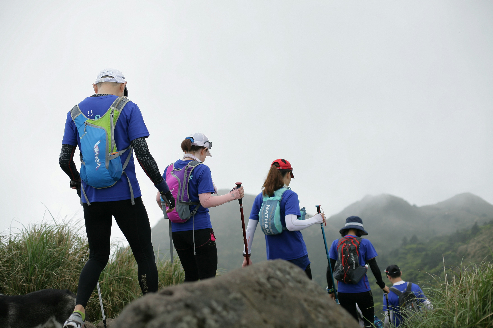

L'estiu s'apropa i, amb ell, les ganes d'escapar de la calor, l'asfalt i les platges massificades. La muntanya es presenta com l'opció perfecta: aire fresc, natura exuberant i paisatges que treuen l'alè. Però, per què fer-ho acompanyat d'un guia professional de muntanya?
Els grans avantatges d'un viatge guiat a l'estiu
1. Zero estrès amb la planificació: L'estiu és temporada alta arreu. Aconseguir reserves a refugis o hotels propers a rutes famoses pot ser un autèntic maldecap. Un viatge organitzat per agència i amb guia et lliura d'aquestes gestions perquè només et preocupis de gaudir.
2. Gestió de la meteorologia: Sí, a l'estiu fa bo, però la muntanya pot ser impredictible. Tempestes de tarda o onades de calor extremes són freqüents. El guia coneix el terreny, porta sempre un Pla B preparat i sap llegir els canvis de temps per garantir la seguretat del grup en tot moment.
3. Descobrir racons amagats: Quan els camins principals estan plens, el guia sap agafar aquella variant poc coneguda on tindreu les vistes només per a vosaltres. A més, aporta coneixements sobre la flora alpina en màxima floració, fauna i història local que no trobaries en una simple aplicació mòbil.
3 destins de muntanya espectaculars per aquest estiu
A Ruta a Ruta us proposem tres opcions perfectes per a grups que volen natura i aire fresc:
1. Els Dolomites: L'espectacle de l'Alta Via
Les famoses agulles calcàries dels Dolomites italians llueixen els seus millors colors sota el sol estival. Tot i que és un destí popular, anar-hi amb guia ens permetrà gaudir de les Tres Cimes de Lavaredo a primera hora i després perdre'ns per valls i refugis amb menys afluència, gaudint d'una bona pasta per recuperar forces.

2. Eslovàquia: El cor verd d'Europa
Si busqueu una mica més de tranquil·litat i autenticitat salvatge, els Alts Tatres a Eslovàquia són l'opció ideal. Rutes de senderisme que ens porten a cims de més de 2.000 metres on la temperatura a l'estiu és perfecta per caminar sense ofegar-se, rodejats de llacs cristal·lins.

3. Els Carpats (Romania): L'estiu més salvatge
Imagineu recórrer el parc natural de Piatra Craiului i endinsar-vos als boscos llegendaris on habita l'ós bru, per acabar la jornada sopant en un petit poble de Transsilvània on el temps sembla haver-se aturat. L'estiu ofereix condicions ideals per travessar aquestes imponents muntanyes amb seguretat.
Aquest estiu, tria la muntanya
Tens un grup i ja sabeu quin mes teniu vacances? Nosaltres ens encarreguem de tota la resta.
Sol·licita el teu viatge a mida